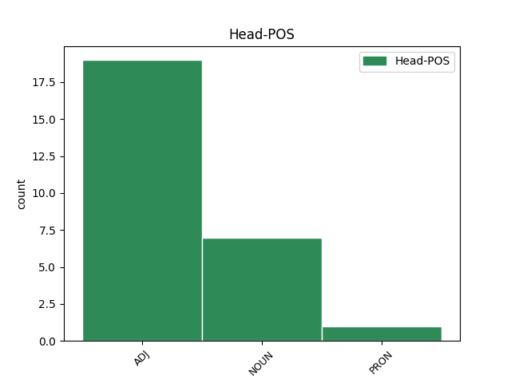

Distribution of features within this leaf

Agreement Rules sorted by frequency.
- When the dependent token is the direct object complements(comp:obj) of the head token, and the head token is NOUN and the dependent token is ADJ.
1 αὐτὰρ _ _ _ _ 0 _ _ _
2 ὅ _ _ _ _ 0 _ _ _
3 γ̓ _ _ _ _ 0 _ _ _
4 ὃν ἑός ADJ a-s---ma- Case=Acc|Gender=Masc|Number=Sing 6 comp:obj _ _
5 φίλον _ _ _ _ 0 _ _ _
6 υἱὸν υἱός NOUN n-s---ma- Case=Acc|Gender=Masc|Number=Sing 0 _ _ _
7 ἐπεὶ _ _ _ _ 0 _ _ _
8 κύσε _ _ _ _ 0 _ _ _
9 πῆλέ _ _ _ _ 0 _ _ _
10 τε _ _ _ _ 0 _ _ _
11 χερσὶν _ _ _ _ 0 _ _ _
12 εἶπε _ _ _ _ 0 _ _ _
13 δ̓ _ _ _ _ 0 _ _ _
14 ἐπευξάμενος _ _ _ _ 0 _ _ _
15 Διί _ _ _ _ 0 _ _ _
16 τ̓ _ _ _ _ 0 _ _ _
17 ἄλλοισίν _ _ _ _ 0 _ _ _
18 τε _ _ _ _ 0 _ _ _
19 θεοῖσι _ _ _ _ 0 _ _ _
20 · _ _ _ _ 0 _ _ _
1 ὅμως _ _ _ _ 0 _ _ _
2 δ̓ _ _ _ _ 0 _ _ _
3 , _ _ _ _ 0 _ _ _
4 ἀδελφή _ _ _ _ 0 _ _ _
5 , _ _ _ _ 0 _ _ _
6 σοί σύ PRON p-s---fd- Case=Dat|Gender=Fem|Number=Sing 0 _ _ _
7 θ̓ _ _ _ _ 0 _ _ _
8 ὑπούργησον _ _ _ _ 0 _ _ _
9 τάδε _ _ _ _ 0 _ _ _
10 ἐμοί _ _ _ _ 0 _ _ _
11 τ̓ _ _ _ _ 0 _ _ _
12 ἀρωγὰ _ _ _ _ 0 _ _ _
13 τῷ _ _ _ _ 0 _ _ _
14 τε _ _ _ _ 0 _ _ _
15 φιλτάτῳ φίλτατος ADJ a-s---mds Case=Dat|Degree=Sup|Gender=Masc|Number=Sing 6 comp:obj _ _
16 βροτῶν _ _ _ _ 0 _ _ _
17 πάντων _ _ _ _ 0 _ _ _
18 , _ _ _ _ 0 _ _ _
19 ἐν _ _ _ _ 0 _ _ _
20 Ἅιδου _ _ _ _ 0 _ _ _
21 κειμένῳ _ _ _ _ 0 _ _ _
22 κοινῷ _ _ _ _ 0 _ _ _
23 πατρί _ _ _ _ 0 _ _ _
24 . _ _ _ _ 0 _ _ _
1 Ξέρξης _ _ _ _ 0 _ _ _
2 δὲ _ _ _ _ 0 _ _ _
3 ὡς _ _ _ _ 0 _ _ _
4 ἐπύθετο _ _ _ _ 0 _ _ _
5 τὸν _ _ _ _ 0 _ _ _
6 Ἑλλήσποντον _ _ _ _ 0 _ _ _
7 ἐζεῦχθαι _ _ _ _ 0 _ _ _
8 καὶ _ _ _ _ 0 _ _ _
9 τὸν _ _ _ _ 0 _ _ _
10 Ἄθω _ _ _ _ 0 _ _ _
11 διεσκάφθαι _ _ _ _ 0 _ _ _
12 , _ _ _ _ 0 _ _ _
13 προῆγεν _ _ _ _ 0 _ _ _
14 ἐκ _ _ _ _ 0 _ _ _
15 τῶν _ _ _ _ 0 _ _ _
16 Σάρδεων _ _ _ _ 0 _ _ _
17 ἐφ̓ _ _ _ _ 0 _ _ _
18 Ἑλλησπόντου _ _ _ _ 0 _ _ _
19 τὴν ὁ DET l-s---fa- Case=Acc|Gender=Fem|Number=Sing 20 comp:obj _ _
20 πορείαν πορεία NOUN n-s---fa- Case=Acc|Gender=Fem|Number=Sing 0 _ _ _
21 ποιούμενος _ _ _ _ 0 _ _ _
22 · _ _ _ _ 0 _ _ _
Disagree Examples:
1 ταῦτα _ _ _ _ 0 _ _ _
2 γὰρ _ _ _ _ 0 _ _ _
3 πόσις _ _ _ _ 0 _ _ _
4 τε _ _ _ _ 0 _ _ _
5 σὸς _ _ _ _ 0 _ _ _
6 ἐφεῖτ̓ _ _ _ _ 0 _ _ _
7 , _ _ _ _ 0 _ _ _
8 ἐγὼ _ _ _ _ 0 _ _ _
9 δὲ _ _ _ _ 0 _ _ _
10 πιστὸς πιστός ADJ a-s---mn- Case=Nom|Gender=Masc|Number=Sing 0 _ _ _
11 ὢν _ _ _ _ 0 _ _ _
12 κείνῳ ἐκεῖνος ADJ a-s---md- Case=Dat|Gender=Masc|Number=Sing 10 comp:obj _ _
13 τελῶ _ _ _ _ 0 _ _ _
14 . _ _ _ _ 0 _ _ _
1 Ἐτεοκλέα _ _ _ _ 0 _ _ _
2 μέν _ _ _ _ 0 _ _ _
3 , _ _ _ _ 0 _ _ _
4 ὡς _ _ _ _ 0 _ _ _
5 λέγουσι _ _ _ _ 0 _ _ _
6 , _ _ _ _ 0 _ _ _
7 σὺν _ _ _ _ 0 _ _ _
8 δίκης _ _ _ _ 0 _ _ _
9 χρήσει _ _ _ _ 0 _ _ _
10 δικαίᾳ _ _ _ _ 0 _ _ _
11 καὶ _ _ _ _ 0 _ _ _
12 νόμου _ _ _ _ 0 _ _ _
13 κατὰ _ _ _ _ 0 _ _ _
14 χθονὸς _ _ _ _ 0 _ _ _
15 ἔκρυψε _ _ _ _ 0 _ _ _
16 τοῖς _ _ _ _ 0 _ _ _
17 ἔνερθεν _ _ _ _ 0 _ _ _
18 ἔντιμον ἔντιμος ADJ a-s---ma- Case=Acc|Gender=Masc|Number=Sing 0 _ _ _
19 νεκροῖς νεκρός ADJ a-p---md- Case=Dat|Gender=Masc|Number=Plur 18 comp:obj _ SpaceAfter=No
20 · _ _ _ _ 0 _ _ _
1 ὦ _ _ _ _ 0 _ _ _
2 Σκαμάνδριοι _ _ _ _ 0 _ _ _
3 γείτονες _ _ _ _ 0 _ _ _
4 ῥοαί _ _ _ _ 0 _ _ _
5 , _ _ _ _ 0 _ _ _
6 εὔφρονες εὔφρων ADJ a-p---fv- Case=Voc|Gender=Fem|Number=Plur 0 _ _ _
7 Ἀργείοις ̓ἀργεῖος ADJ a-p---md- Case=Dat|Gender=Masc|Number=Plur 6 comp:obj _ SpaceAfter=No
8 , _ _ _ _ 0 _ _ _
9 οὐκέτ̓ _ _ _ _ 0 _ _ _
10 ἄνδρα _ _ _ _ 0 _ _ _
11 μὴ _ _ _ _ 0 _ _ _
12 τόνδ̓ _ _ _ _ 0 _ _ _
13 ἴδητ̓ _ _ _ _ 0 _ _ _
14 , _ _ _ _ 0 _ _ _
15 ἔπος _ _ _ _ 0 _ _ _
16 ἐξερῶ _ _ _ _ 0 _ _ _
17 μέγ̓ _ _ _ _ 0 _ _ _
18 , _ _ _ _ 0 _ _ _
19 οἷον _ _ _ _ 0 _ _ _
20 οὔτινα _ _ _ _ 0 _ _ _
21 Τροία _ _ _ _ 0 _ _ _
22 στρατοῦ _ _ _ _ 0 _ _ _
23 δέρχθη _ _ _ _ 0 _ _ _
24 χθονὸς _ _ _ _ 0 _ _ _
25 μολόντ̓ _ _ _ _ 0 _ _ _
26 ἀπὸ _ _ _ _ 0 _ _ _
27 Ἑλλανίδος _ _ _ _ 0 _ _ _
28 · _ _ _ _ 0 _ _ _
1 ἐγὼ _ _ _ _ 0 _ _ _
2 δ̓ _ _ _ _ 0 _ _ _
3 ὁ _ _ _ _ 0 _ _ _
4 κείνου _ _ _ _ 0 _ _ _
5 παῖς _ _ _ _ 0 _ _ _
6 , _ _ _ _ 0 _ _ _
7 τὸν _ _ _ _ 0 _ _ _
8 αὐτὸν _ _ _ _ 0 _ _ _
9 ἐς _ _ _ _ 0 _ _ _
10 τόπον _ _ _ _ 0 _ _ _
11 Τροίας _ _ _ _ 0 _ _ _
12 ἐπελθὼν _ _ _ _ 0 _ _ _
13 οὐκ _ _ _ _ 0 _ _ _
14 ἐλάσσονι _ _ _ _ 0 _ _ _
15 σθένει _ _ _ _ 0 _ _ _
16 οὐ _ _ _ _ 0 _ _ _
17 δ̓ _ _ _ _ 0 _ _ _
18 ἔργα _ _ _ _ 0 _ _ _
19 μείω _ _ _ _ 0 _ _ _
20 χειρὸς _ _ _ _ 0 _ _ _
21 ἀρκέσας _ _ _ _ 0 _ _ _
22 ἐμῆς _ _ _ _ 0 _ _ _
23 , _ _ _ _ 0 _ _ _
24 ἄτιμος ἄτιμος ADJ a-s---mn- Case=Nom|Gender=Masc|Number=Sing 0 _ _ _
25 Ἀργείοισιν ̓ἀργεῖος ADJ a-p---md- Case=Dat|Gender=Masc|Number=Plur 24 comp:obj _ _
26 ὧδ̓ _ _ _ _ 0 _ _ _
27 ἀπόλλυμαι _ _ _ _ 0 _ _ _
28 . _ _ _ _ 0 _ _ _
1 ὦ _ _ _ _ 0 _ _ _
2 κλεινὰ _ _ _ _ 0 _ _ _
3 Σαλαμίς _ _ _ _ 0 _ _ _
4 , _ _ _ _ 0 _ _ _
5 σὺ _ _ _ _ 0 _ _ _
6 μέν _ _ _ _ 0 _ _ _
7 που _ _ _ _ 0 _ _ _
8 ναίεις _ _ _ _ 0 _ _ _
9 ἁλίπλακτος _ _ _ _ 0 _ _ _
10 , _ _ _ _ 0 _ _ _
11 εὐδαίμων _ _ _ _ 0 _ _ _
12 , _ _ _ _ 0 _ _ _
13 πᾶσιν πᾶς ADJ a-p---md- Case=Dat|Gender=Masc|Number=Plur 14 comp:obj _ _
14 περίφαντος περίφαντος ADJ a-s---fn- Case=Nom|Gender=Fem|Number=Sing 0 _ _ _
15 ἀεί _ _ _ _ 0 _ _ _
16 · _ _ _ _ 0 _ _ _